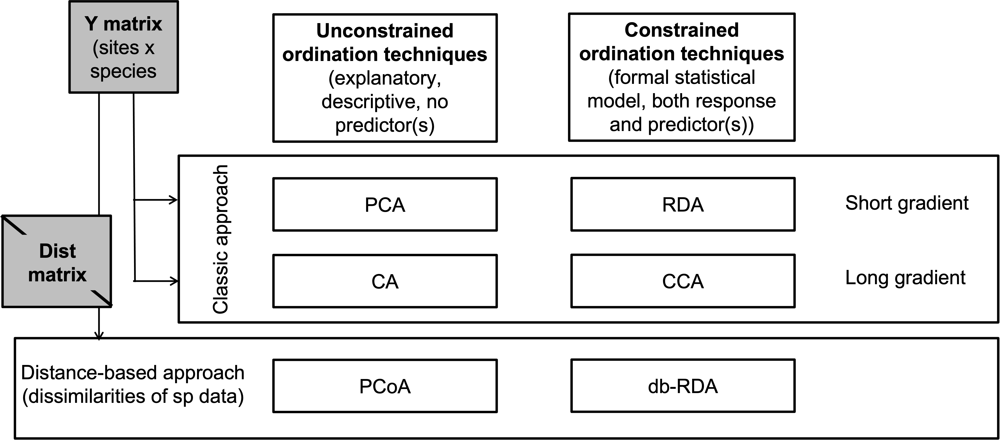
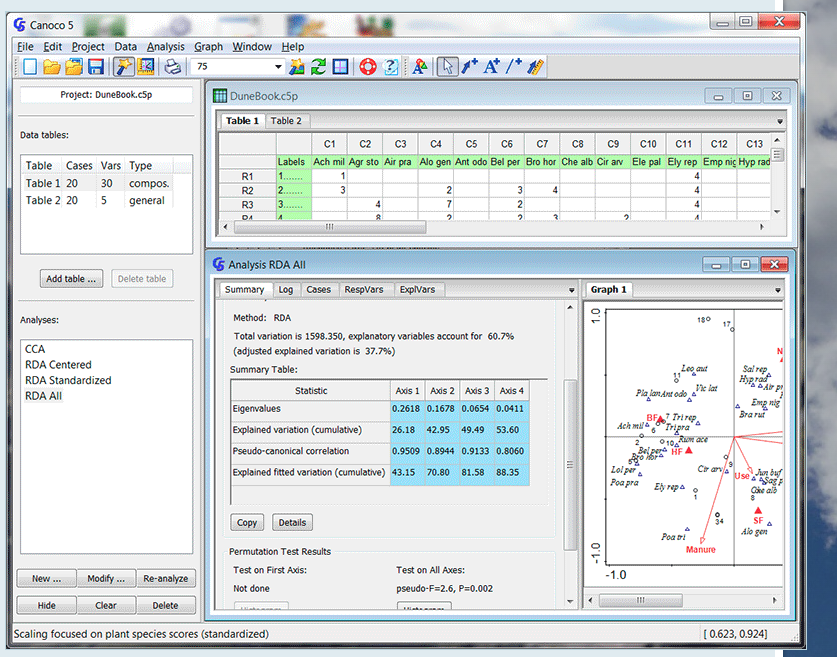

History: Correspondence analysis and Canonical Correspondence Analysis
Radchuk Viktoriia
2023-03-21
Putting methods in order

CA and CCA
Some of the oldest techniques used by (plant) community ecologists

Correspondence analysis (CA)
- A unimodal unconstrained ordination method;
- The resulting ordination of the distances among
sites and species are presented by \(\chi^2\) distance, which is not influenced
by double zeros.
- Data: frequencies or frequency-like,
i.e. nonnegative. Usually characterised by a long gradient ( > 4SD).
In simple words: species counts or presence-absence data.
- Kaiser-Gutmann criterion and the broken stick model can be used to decide how many axes to retain.
Scaling in CA
- Scaling 1: The distances among
objects in reduced space approximate \(\chi^2\) distances in multidimensional
space. The objects (sites) that are closer to each other are likely to
be more similar in their composition. A species that is close to the
object likely contributes strongly to it.
- Scaling 2: The distances among species in reduced space approximate their \(\chi^2\) distances in multidimensional space. If a species lies close to the object, it is more likely to be found in that object or to have higher frequency there.
Briefly on technical side
- The variation that is explained is measured by
total inertia;
- To know the proportion of variation explained by each axis we need to divide the eigenvalue of this axis by the total inertia;
- Produces one correspondence axis fewer than \(min(n, p)\);
- Often creates a strong arch artefact that is due to a non-linear correlation between first and higher axes. This arch is due to having some sites that have no species in common (they are very dissimilar). Instead of a linear trend, in an ordination space such a phenomenon is represented by an arch (as if the space of the first axis has to bend to reflect those huge dissimilarities among the sites).
Application: Vegetation data
We have plant cover data taken from 24 sites on in total 44 species.
## 'data.frame': 24 obs. of 44 variables:
## $ Callvulg: num 0.55 0.67 0.1 0 0 ...
## $ Empenigr: num 11.13 0.17 1.55 15.13 12.68 ...
## $ Rhodtome: num 0 0 0 2.42 0 0 1.55 0 0.35 0.07 ...
## $ Vaccmyrt: num 0 0.35 0 5.92 0 ...
## $ Vaccviti: num 17.8 12.1 13.5 16 23.7 ...
## $ Pinusylv: num 0.07 0.12 0.25 0 0.03 0.12 0.1 0.1 0.05 0.12 ...
## $ Descflex: num 0 0 0 3.7 0 0.02 0.78 0 0.4 0 ...
## $ Betupube: num 0 0 0 0 0 0 0.02 0 0 0 ...
## $ Vacculig: num 1.6 0 0 1.12 0 0 2 0 0.2 0 ...
## $ Diphcomp: num 2.07 0 0 0 0 0 0 0 0 0.07 ...
## $ Dicrsp : num 0 0.33 23.43 0 0 ...
## $ Dicrfusc: num 1.62 10.92 0 3.63 3.42 ...
## $ Dicrpoly: num 0 0.02 1.68 0 0.02 0.02 0 0.23 0.2 0 ...
## $ Hylosple: num 0 0 0 6.7 0 0 0 0 9.97 0 ...
## $ Pleuschr: num 4.67 37.75 32.92 58.07 19.42 ...
## $ Polypili: num 0.02 0.02 0 0 0.02 0.02 0 0 0 0 ...
## $ Polyjuni: num 0.13 0.23 0.23 0 2.12 1.58 0 0.02 0.08 0.02 ...
## $ Polycomm: num 0 0 0 0.13 0 0.18 0 0 0 0 ...
## $ Pohlnuta: num 0.13 0.03 0.32 0.02 0.17 0.07 0.1 0.13 0.07 0.03 ...
## $ Ptilcili: num 0.12 0.02 0.03 0.08 1.8 0.27 0.03 0.1 0.03 0.25 ...
## $ Barbhatc: num 0 0 0 0.08 0.02 0.02 0 0 0 0.07 ...
## $ Cladarbu: num 21.73 12.05 3.58 1.42 9.08 ...
## $ Cladrang: num 21.47 8.13 5.52 7.63 9.22 ...
## $ Cladstel: num 3.5 0.18 0.07 2.55 0.05 ...
## $ Cladunci: num 0.3 2.65 8.93 0.15 0.73 0.25 2.38 0.82 0.05 0.95 ...
## $ Cladcocc: num 0.18 0.13 0 0 0.08 0.1 0.17 0.15 0.02 0.17 ...
## $ Cladcorn: num 0.23 0.18 0.2 0.38 1.42 0.25 0.13 0.05 0.03 0.05 ...
## $ Cladgrac: num 0.25 0.23 0.48 0.12 0.5 0.18 0.18 0.22 0.07 0.23 ...
## $ Cladfimb: num 0.25 0.25 0 0.1 0.17 0.1 0.2 0.22 0.1 0.18 ...
## $ Cladcris: num 0.23 1.23 0.07 0.03 1.78 0.12 0.2 0.17 0.02 0.57 ...
## $ Cladchlo: num 0 0 0.1 0 0.05 0.05 0.02 0 0 0.02 ...
## $ Cladbotr: num 0 0 0.02 0.02 0.05 0.02 0 0 0.02 0.07 ...
## $ Cladamau: num 0.08 0 0 0 0 0 0 0 0 0 ...
## $ Cladsp : num 0.02 0 0 0.02 0 0 0.02 0.02 0 0.07 ...
## $ Cetreric: num 0.02 0.15 0.78 0 0 0 0.02 0.18 0 0.18 ...
## $ Cetrisla: num 0 0.03 0.12 0 0 0 0 0.08 0.02 0.02 ...
## $ Flavniva: num 0.12 0 0 0 0.02 0.02 0 0 0 0 ...
## $ Nepharct: num 0.02 0 0 0 0 0 0 0 0 0 ...
## $ Stersp : num 0.62 0.85 0.03 0 1.58 0.28 0 0.03 0.02 0.03 ...
## $ Peltapht: num 0.02 0 0 0.07 0.33 0 0 0 0 0.02 ...
## $ Icmaeric: num 0 0 0 0 0 0 0 0.07 0 0 ...
## $ Cladcerv: num 0 0 0 0 0 0 0 0 0 0 ...
## $ Claddefo: num 0.25 1 0.33 0.15 1.97 0.37 0.15 0.67 0.08 0.47 ...
## $ Cladphyl: num 0 0 0 0 0 0 0 0 0 0 ...Run CA
##
## Call:
## cca(X = varespec)
##
## Partitioning of scaled Chi-square:
## Inertia Proportion
## Total 2.083 1
## Unconstrained 2.083 1
##
## Eigenvalues, and their contribution to the scaled Chi-square
##
## Importance of components:
## CA1 CA2 CA3 CA4 CA5 CA6 CA7
## Eigenvalue 0.5249 0.3568 0.2344 0.19546 0.17762 0.12156 0.11549
## Proportion Explained 0.2520 0.1713 0.1125 0.09383 0.08526 0.05835 0.05544
## Cumulative Proportion 0.2520 0.4233 0.5358 0.62962 0.71489 0.77324 0.82868
## CA8 CA9 CA10 CA11 CA12 CA13 CA14
## Eigenvalue 0.08894 0.07318 0.05752 0.04434 0.02546 0.01710 0.014896
## Proportion Explained 0.04269 0.03513 0.02761 0.02129 0.01222 0.00821 0.007151
## Cumulative Proportion 0.87137 0.90650 0.93411 0.95539 0.96762 0.97583 0.982978
## CA15 CA16 CA17 CA18 CA19 CA20
## Eigenvalue 0.010160 0.007830 0.006032 0.004008 0.002865 0.0019275
## Proportion Explained 0.004877 0.003759 0.002896 0.001924 0.001375 0.0009253
## Cumulative Proportion 0.987855 0.991614 0.994510 0.996434 0.997809 0.9987341
## CA21 CA22 CA23
## Eigenvalue 0.0018074 0.0005864 0.0002434
## Proportion Explained 0.0008676 0.0002815 0.0001168
## Cumulative Proportion 0.9996017 0.9998832 1.0000000
##
## Scaling 2 for species and site scores
## * Species are scaled proportional to eigenvalues
## * Sites are unscaled: weighted dispersion equal on all dimensions
##
##
## Species scores
##
## CA1 CA2 CA3 CA4 CA5 CA6
## Callvulg 0.0219651 -0.954204 0.055461 -1.2797244 0.0579945 0.798814
## Empenigr 0.0544138 0.226569 0.190301 0.0104668 0.3611286 -0.139798
## Rhodtome 0.8007640 0.895570 1.473304 0.0531002 1.3623062 -0.098847
## Vaccmyrt 1.0588751 0.969421 1.318804 0.1024323 0.1940588 0.248430
## Vaccviti 0.1063608 0.187223 0.071157 0.1076563 0.2894671 -0.051537
## Pinusylv -0.3492265 0.351537 -0.174403 -0.0561897 0.1713089 0.134792
## Descflex 1.1120135 0.728024 0.908150 -0.0005922 -0.5536573 -0.024661
## Betupube 0.4850314 1.165876 1.859362 0.6142811 3.2012930 -0.085239
## Vacculig -0.0601925 -0.973199 0.508703 0.3548606 -0.1289134 -0.566683
## Diphcomp -0.3946082 -0.619767 0.253144 0.4157072 0.1551830 -0.377569
## Dicrsp 1.3128632 0.215210 -2.382601 1.3654912 0.5844397 0.055023
## Dicrfusc 0.9204864 -0.336282 -0.192310 -1.2951865 0.1621852 -0.839809
## Dicrpoly 0.5251420 0.841839 0.389001 0.8468878 1.9249346 0.451664
## Hylosple 1.4535654 1.041666 1.101762 0.4106708 -1.5866910 0.786165
## Pleuschr 0.9492748 0.348263 -0.004863 0.0607013 -0.4727038 0.069878
## Polypili -0.2756876 -0.743016 0.264334 0.6530831 -0.3066610 -0.135153
## Polyjuni 0.7342157 0.059161 -1.087953 0.6678730 0.3257684 -1.067713
## Polycomm 0.6135426 0.789529 0.549966 0.5043274 1.1310269 -0.210949
## Pohlnuta -0.0098863 0.351998 -0.172088 0.0598978 0.3948858 0.138502
## Ptilcili 0.3060113 0.954875 1.663059 0.6189861 2.6639607 0.069360
## Barbhatc 0.3635903 1.265933 2.214206 0.7485792 3.4180314 0.225229
## Cladarbu -0.1109771 -0.886362 0.096956 0.0856283 0.0309403 0.125141
## Cladrang -0.3986726 -0.647506 0.196349 0.3201157 -0.1415224 -0.117122
## Cladstel -1.0413659 0.643770 -0.214966 -0.1662016 -0.1020550 0.001469
## Cladunci 0.5906105 -0.601021 -0.884064 -0.6143250 0.6762879 1.281624
## Cladcocc -0.1545561 -0.349095 -0.103782 -0.2510695 -0.0001597 -0.050661
## Cladcorn 0.1906382 -0.106239 -0.215287 0.1204409 0.1682545 -0.106946
## Cladgrac 0.1417851 -0.185868 -0.115694 0.1675663 0.2079021 0.013103
## Cladfimb 0.0006675 -0.096419 0.089396 -0.1927202 0.2036121 -0.050120
## Cladcris 0.2443835 -0.280964 -0.024662 -0.3642363 0.3026955 0.221793
## Cladchlo -0.4492051 0.721138 0.105982 0.1885373 0.8220828 0.042090
## Cladbotr 0.4091550 0.625599 1.284697 0.4013205 1.8942808 0.418963
## Cladamau -0.4780500 -0.903682 0.403090 0.6975202 -0.0171626 -0.494790
## Cladsp -0.5947602 0.284425 -0.240895 -0.4413346 -0.1008616 0.136249
## Cetreric 0.1781014 -0.411694 -0.815501 -0.0582176 0.3135336 0.827893
## Cetrisla -0.2510628 0.813972 0.415902 0.1754087 1.1601226 0.138273
## Flavniva -1.0427252 -0.497924 -0.062553 0.0031262 -0.6254890 1.030965
## Nepharct 1.2181611 0.119157 -2.098997 0.9858735 0.4029573 -1.908139
## Stersp -0.3747802 -1.362441 0.483100 1.0509067 -0.3747848 -0.502492
## Peltapht 0.2924068 -0.025844 0.021972 0.3143596 0.0769010 -0.293298
## Icmaeric 0.0274415 -1.445286 0.349268 0.1597361 -0.1574714 -0.729434
## Cladcerv -0.6689408 -0.003126 -0.590988 0.1349723 -0.3431706 0.144390
## Claddefo 0.3760557 -0.296651 -0.073940 -0.3076779 0.3810806 0.316994
## Cladphyl -0.9300080 0.690432 -0.386922 -0.3276803 -0.0677692 0.171024
##
##
## Site scores (weighted averages of species scores)
##
## CA1 CA2 CA3 CA4 CA5 CA6
## 18 -0.149232 -0.89910 0.474143 0.55218 0.333521 -0.40879
## 15 0.962177 -0.24177 -0.065652 -0.49180 -0.649787 -0.23363
## 24 1.363110 0.25182 -2.784969 1.82017 0.734410 1.34152
## 27 1.175623 0.83541 0.916089 0.27768 -1.142455 0.21767
## 23 0.496714 -0.09389 0.301149 0.34124 0.570712 -0.50968
## 19 0.004893 0.61971 0.057333 0.13950 -0.274987 -0.09789
## 22 1.188001 -0.19259 0.228980 -2.31092 0.183260 -1.73611
## 16 0.879113 -0.55664 0.002314 -1.80490 0.031028 -1.55021
## 28 1.765788 1.36537 1.383872 0.52333 -2.118872 1.19840
## 13 -0.269156 -1.34875 0.243060 -1.31835 -0.001711 1.52215
## 14 0.729491 -1.17893 -1.069360 -1.96412 1.355664 2.62928
## 20 0.528439 -0.31283 -0.009892 0.22972 0.108702 0.60480
## 25 1.367405 0.20034 -2.292582 1.01623 0.447480 -2.02763
## 7 -0.365350 -1.77480 0.691674 1.03984 -0.077502 -0.57207
## 5 -0.591300 -2.02176 0.773139 1.69572 -0.616039 -0.87384
## 6 -0.456210 -1.29742 0.270061 0.50646 0.150121 0.25985
## 3 -1.241648 0.20216 -0.156431 0.08690 -0.353443 -0.34506
## 4 -1.063176 -0.59183 -0.069763 -0.04061 -0.713689 1.27068
## 2 -1.369446 0.84240 -0.325298 -0.15990 -0.252740 -0.28474
## 9 -1.293505 1.31734 -0.533097 -0.43829 -0.081513 -0.03610
## 12 -1.002610 0.82306 -0.324741 -0.19673 -0.025098 -0.08034
## 10 -1.383095 1.19263 -0.488500 -0.42168 -0.054969 -0.14134
## 11 -0.445323 -0.06481 -0.002680 0.20422 -0.351513 0.19887
## 21 0.358204 1.35180 2.321948 0.81614 3.663041 0.20222Decide how many axes to retain
Apply broken stick model.
## CA1 CA2 CA3 CA4 CA5 CA6
## 0.338229117 0.247655278 0.202368359 0.172177079 0.149533620 0.131418852
## CA7 CA8 CA9 CA10 CA11 CA12
## 0.116323212 0.103384092 0.092062362 0.081998603 0.072941219 0.064707233
## CA13 CA14 CA15 CA16 CA17 CA18
## 0.057159414 0.050192195 0.043722635 0.037684379 0.032023514 0.026695642
## CA19 CA20 CA21 CA22 CA23
## 0.021663762 0.016896718 0.012368026 0.008054986 0.003937993## CA1 CA2 CA3 CA4 CA5 CA6
## 0.5249319943 0.3567980231 0.2344375097 0.1954632481 0.1776196638 0.1215603079
## CA7 CA8 CA9 CA10 CA11 CA12
## 0.1154921638 0.0889384754 0.0731751232 0.0575173844 0.0443421139 0.0254634821
## CA13 CA14 CA15 CA16 CA17 CA18
## 0.0171029993 0.0148962961 0.0101598010 0.0078297861 0.0060322639 0.0040079424
## CA19 CA20 CA21 CA22 CA23
## 0.0028650483 0.0019275097 0.0018073919 0.0005863825 0.0002433768
Visualise CA

Plot other axes
par(mfrow = c(1, 2))
plot(ca_veg, scaling = 2, choices = c(2, 3))
plot(ca_veg, scaling = 2, choices = c(2, 4))
Detrended Correpondence Analysis (DCA)
- To detrend the data axis I is divided into a chosen
number of segments, and within each segment the mean of the object
scores along axis II is forced to 0.
- Rarely used nowadays as it is criticised for such a
brute-force approach to data.
- Was used in the past to decide whether to apply unimodal or linear methods, based on the length of the gradient. But is not really needed nowadays as transformation-based and distanced-based approaches were developed.
Example of DCA
Axis lengths indicates the gradient length (the one to look at is for the first axis, DCA1).
##
## Call:
## decorana(veg = varespec)
##
## Detrended correspondence analysis with 26 segments.
## Rescaling of axes with 4 iterations.
## Total inertia (scaled Chi-square): 2.0832
##
## DCA1 DCA2 DCA3 DCA4
## Eigenvalues 0.5235 0.3253 0.20010 0.19176
## Additive Eigenvalues 0.5235 0.3217 0.17919 0.11922
## Decorana values 0.5249 0.1572 0.09669 0.06075
## Axis lengths 2.8161 2.2054 1.54650 1.64864## Species scores:
##
## DCA1 DCA2 DCA3 DCA4 Totals
## Callvulg 0.04119 -1.53268 -2.55101 1.32277 45.07
## Empenigr 0.09019 0.82274 0.20569 0.30631 151.99
## Rhodtome 1.34533 2.47141 -0.34970 -1.13823 8.39
## Vaccmyrt 1.86298 1.71424 -0.60535 -0.40205 50.71
## Vaccviti 0.16641 0.71095 0.00313 -0.55801 275.03
## Pinusylv -0.73490 1.62050 -1.60275 -2.10199 4.11
## Descflex 1.97061 1.81651 1.74896 -0.91463 5.60
## Betupube 0.79745 3.36374 -0.94546 -1.01741 0.29
## Vacculig -0.08912 -1.17478 2.86624 0.87025 15.22
## Diphcomp -0.82669 -0.44195 2.58579 -0.38459 3.24
## Dicrsp 2.37743 -0.27373 -0.47099 -1.89036 40.50
## Dicrfusc 1.58267 -1.33770 -1.33563 1.47417 113.52
## Dicrpoly 0.86689 2.39519 -0.82064 -3.41534 6.06
## Hylosple 2.66242 1.19669 1.48288 -0.69978 18.04
## Pleuschr 1.64098 0.15607 0.30044 -0.26717 377.97
## Polypili -0.56213 0.14009 0.25198 0.49177 0.61
## Polyjuni 1.22244 -0.89173 0.61287 3.60066 13.85
## Polycomm 1.01545 2.08388 0.06402 0.84199 0.71
## Pohlnuta -0.00712 1.09704 -0.82126 -1.59862 2.62
## Ptilcili 0.48093 2.86420 -0.71801 -1.02698 14.01
## Barbhatc 0.58303 3.71792 -0.84212 -1.88837 3.19
## Cladarbu -0.18554 -1.18973 0.68113 0.55399 255.05
## Cladrang -0.83427 -0.78085 0.90603 0.70057 388.71
## Cladstel -1.67768 0.98907 -0.83789 -0.60206 486.71
## Cladunci 0.97686 -1.70859 -1.68281 -2.26756 56.28
## Cladcocc -0.27221 -0.76713 -0.63836 0.66927 2.79
## Cladcorn 0.29068 -0.97039 0.50414 0.95738 6.22
## Cladgrac 0.21778 -0.41879 0.06530 -0.31472 5.14
## Cladfimb 0.00889 -0.23922 -0.26505 0.33123 3.96
## Cladcris 0.37774 -1.09161 -0.55627 0.23868 7.47
## Cladchlo -0.91983 1.54955 -0.58109 -1.48643 1.16
## Cladbotr 0.66438 2.19584 -0.90331 -0.91391 0.47
## Cladamau -0.96418 -0.98992 2.71458 0.52352 0.14
## Cladsp -1.12318 -0.15330 -0.69833 0.44040 0.52
## Cetreric 0.27163 -1.28867 -0.81682 -1.93935 3.60
## Cetrisla -0.50158 2.22098 -1.16461 -1.89349 2.03
## Flavniva -1.67937 -3.67985 4.15644 3.18919 11.85
## Nepharct 2.18561 -0.82837 0.71958 5.81930 5.26
## Stersp -0.78699 -2.01214 2.31212 2.03946 17.52
## Peltapht 0.45763 -0.34395 0.09916 1.34695 0.76
## Icmaeric 0.04950 -1.97605 1.41509 2.10154 0.22
## Cladcerv -1.21585 -2.30519 2.55186 3.41532 0.10
## Claddefo 0.60517 -1.19771 -0.33388 0.22585 10.23
## Cladphyl -1.53959 1.48574 -1.43209 -1.52387 0.80
##
## Site scores:
##
## DCA1 DCA2 DCA3 DCA4 Totals
## 18 -0.1729 -0.2841 0.4775 0.2521 89.2
## 15 0.8539 -0.3360 0.0708 0.0924 89.8
## 24 1.2467 -0.1183 -0.1211 -0.8718 94.2
## 27 1.0675 0.4169 0.2897 -0.1758 125.6
## 23 0.4234 0.0112 0.2179 0.1265 90.5
## 19 0.0252 0.3600 -0.0263 -0.1168 81.3
## 22 1.0695 -0.3707 -0.4285 0.4145 109.8
## 16 0.7724 -0.5325 -0.2856 0.5269 88.5
## 28 1.6189 0.5482 0.2342 -0.3333 110.7
## 13 -0.2642 -0.6851 -0.3777 0.5003 101.9
## 14 0.6431 -0.9604 -0.6000 -0.2885 81.7
## 20 0.4504 -0.1666 0.1850 -0.1291 64.1
## 25 1.2501 -0.2248 0.0244 0.3741 94.1
## 7 -0.3910 -0.7618 0.8640 0.5557 103.4
## 5 -0.6407 -0.9427 0.9465 0.7769 94.8
## 6 -0.4523 -0.5529 0.3988 0.2781 110.9
## 3 -1.1043 0.2106 -0.0653 -0.0539 106.7
## 4 -0.9454 -0.5974 0.4639 0.4889 84.8
## 2 -1.1971 0.5691 -0.3246 -0.2522 119.1
## 9 -1.0983 0.7850 -0.5274 -0.4848 122.6
## 12 -0.8673 0.5621 -0.3254 -0.3217 119.8
## 10 -1.1842 0.7442 -0.4995 -0.3917 122.4
## 11 -0.4134 0.0260 0.0107 -0.0682 112.8
## 21 0.3210 1.2450 -0.2541 -0.5253 99.2Visualize DCA
 Technical detail: in DCA only scaling 1 is available,
that is the focus on objects rather than species.
Technical detail: in DCA only scaling 1 is available,
that is the focus on objects rather than species.
envfit: post-hoc explanation of ordination axes
- Often misused in that it is used to explain the
variation in the species data. It does not do that (there are
constrained ordination methods specifically developed for this, CCA and
RDA).
- This function was developed to calculate regression
of post-hoc (supplementary) variables on ordination axes of
unconstrained ordination.
- envfit() also tests the significance of this
regression (of a variable on ordination axes) by permutation test.
- If such a supplementary variable is significant, it does not mean they are important for species composition (they may be, but that is not what the test does). The regression finds the best fit to variation extracted by unconstrained ordination into the main ordination axes.
envfit: example
##
## ***VECTORS
##
## CA1 CA2 r2 Pr(>r)
## [1,] 0.97947 -0.20161 0.2533 0.055 .
## ---
## Signif. codes: 0 '***' 0.001 '**' 0.01 '*' 0.05 '.' 0.1 ' ' 1
## Permutation: free
## Number of permutations: 999Should rather not be used to avoid confusion.
envfit: visualization

Canonical Correspondence Analysis
- Was very popular in the past, now rather rarely
used (because the methods that can deal with data in a more
straightforward way have been developed).
- It is a constrained ordination method that
preserves \(\chi^2\) distance.
- Rare species may have a disproportionate effect on
the method (because the difference in abundance for common species
contributes less to the \(\chi^2\)
distance than the same difference for a rare species).
- Simulation studies show that \(\chi^2\) distance perform not the best for
community data.
- No simple method to correct for the proportion of the total explained inertia, no way to calculate adjusted \(R^2\).
Application of CCA
Explain plant community composition by soil properties (physical and chemical).
## 'data.frame': 24 obs. of 14 variables:
## $ N : num 19.8 13.4 20.2 20.6 23.8 22.8 26.6 24.2 29.8 28.1 ...
## $ P : num 42.1 39.1 67.7 60.8 54.5 40.9 36.7 31 73.5 40.5 ...
## $ K : num 140 167 207 234 181 ...
## $ Ca : num 519 357 973 834 777 ...
## $ Mg : num 90 70.7 209.1 127.2 125.8 ...
## $ S : num 32.3 35.2 58.1 40.7 39.5 40.8 33.8 27.1 42.5 60.2 ...
## $ Al : num 39 88.1 138 15.4 24.2 ...
## $ Fe : num 40.9 39 35.4 4.4 3 ...
## $ Mn : num 58.1 52.4 32.1 132 50.1 ...
## $ Zn : num 4.5 5.4 16.8 10.7 6.6 9.1 7.4 5.2 9.3 9.1 ...
## $ Mo : num 0.3 0.3 0.8 0.2 0.3 0.4 0.3 0.3 0.3 0.5 ...
## $ Baresoil: num 43.9 23.6 21.2 18.7 46 40.5 23 29.8 17.6 29.9 ...
## $ Humdepth: num 2.2 2.2 2 2.9 3 3.8 2.8 2 3 2.2 ...
## $ pH : num 2.7 2.8 3 2.8 2.7 2.7 2.8 2.8 2.8 2.8 ...Fit CCA
## Call: cca(X = varespec, Y = varechem)
##
## Inertia Proportion Rank
## Total 2.0832 1.0000
## Constrained 1.4415 0.6920 14
## Unconstrained 0.6417 0.3080 9
## Inertia is scaled Chi-square
##
## Eigenvalues for constrained axes:
## CCA1 CCA2 CCA3 CCA4 CCA5 CCA6 CCA7 CCA8 CCA9 CCA10 CCA11
## 0.4389 0.2918 0.1628 0.1421 0.1180 0.0890 0.0703 0.0584 0.0311 0.0133 0.0084
## CCA12 CCA13 CCA14
## 0.0065 0.0062 0.0047
##
## Eigenvalues for unconstrained axes:
## CA1 CA2 CA3 CA4 CA5 CA6 CA7 CA8 CA9
## 0.19776 0.14193 0.10117 0.07079 0.05330 0.03330 0.01887 0.01510 0.00949Interpret CCA
##
## Call:
## cca(X = varespec, Y = varechem)
##
## Partitioning of scaled Chi-square:
## Inertia Proportion
## Total 2.0832 1.000
## Constrained 1.4415 0.692
## Unconstrained 0.6417 0.308
##
## Eigenvalues, and their contribution to the scaled Chi-square
##
## Importance of components:
## CCA1 CCA2 CCA3 CCA4 CCA5 CCA6 CCA7
## Eigenvalue 0.4389 0.2918 0.16285 0.14213 0.11795 0.08903 0.07029
## Proportion Explained 0.2107 0.1401 0.07817 0.06823 0.05662 0.04274 0.03374
## Cumulative Proportion 0.2107 0.3507 0.42890 0.49713 0.55375 0.59649 0.63023
## CCA8 CCA9 CCA10 CCA11 CCA12 CCA13
## Eigenvalue 0.05836 0.03114 0.013294 0.008364 0.006538 0.006156
## Proportion Explained 0.02801 0.01495 0.006382 0.004015 0.003139 0.002955
## Cumulative Proportion 0.65825 0.67319 0.679576 0.683592 0.686730 0.689685
## CCA14 CA1 CA2 CA3 CA4 CA5 CA6
## Eigenvalue 0.004733 0.19776 0.14193 0.10117 0.07079 0.05330 0.03330
## Proportion Explained 0.002272 0.09493 0.06813 0.04857 0.03398 0.02559 0.01598
## Cumulative Proportion 0.691958 0.78689 0.85502 0.90359 0.93757 0.96315 0.97914
## CA7 CA8 CA9
## Eigenvalue 0.018868 0.015104 0.009488
## Proportion Explained 0.009057 0.007251 0.004554
## Cumulative Proportion 0.988195 0.995446 1.000000
##
## Accumulated constrained eigenvalues
## Importance of components:
## CCA1 CCA2 CCA3 CCA4 CCA5 CCA6 CCA7
## Eigenvalue 0.4389 0.2918 0.1628 0.1421 0.11795 0.08903 0.07029
## Proportion Explained 0.3045 0.2024 0.1130 0.0986 0.08183 0.06176 0.04877
## Cumulative Proportion 0.3045 0.5069 0.6198 0.7184 0.80027 0.86203 0.91080
## CCA8 CCA9 CCA10 CCA11 CCA12 CCA13
## Eigenvalue 0.05836 0.03114 0.013294 0.008364 0.006538 0.006156
## Proportion Explained 0.04049 0.02160 0.009223 0.005803 0.004536 0.004271
## Cumulative Proportion 0.95128 0.97288 0.982107 0.987910 0.992446 0.996716
## CCA14
## Eigenvalue 0.004733
## Proportion Explained 0.003284
## Cumulative Proportion 1.000000
##
## Scaling 2 for species and site scores
## * Species are scaled proportional to eigenvalues
## * Sites are unscaled: weighted dispersion equal on all dimensions
##
##
## Species scores
##
## CCA1 CCA2 CCA3 CCA4 CCA5 CCA6
## Callvulg 0.075347 -0.93581 1.677742 0.695507 1.077518 -0.345001
## Empenigr -0.181340 0.07610 0.036462 -0.427727 -0.138153 0.010517
## Rhodtome -1.053549 -0.06026 0.077428 -0.938897 -0.213938 -0.518031
## Vaccmyrt -1.277428 0.30759 0.303704 -0.092088 -0.568820 -0.613023
## Vaccviti -0.152563 0.12054 -0.053031 -0.362279 0.083942 0.008938
## Pinusylv 0.242956 0.26432 0.223265 -0.273806 0.292102 -0.063335
## Descflex -1.443872 0.27019 -0.162082 0.606576 -0.476067 0.382590
## Betupube -0.711004 -0.22681 -0.083007 -2.408417 -0.216212 -1.671857
## Vacculig 0.513817 -1.18831 -0.377748 0.177035 -0.958084 0.311138
## Diphcomp 0.099310 -0.89289 -0.419273 -0.532348 -0.270745 0.622270
## Dicrsp -0.849964 0.23153 -1.751924 0.260810 1.522412 0.390210
## Dicrfusc -0.499460 -0.41539 0.824743 -0.258156 0.112149 0.638702
## Dicrpoly -0.527090 0.08050 -0.812083 -1.201383 0.768689 -1.025365
## Hylosple -1.828026 0.79385 0.049816 1.358093 -0.916528 -0.223338
## Pleuschr -0.924978 0.33684 -0.009146 0.308091 -0.065518 0.018741
## Polypili 0.144172 -0.45586 -0.515356 -0.281796 -0.052660 0.050659
## Polyjuni -0.606869 0.21021 -0.352109 -0.336004 -0.612858 0.351629
## Polycomm -0.894165 0.32063 -0.234919 -1.076106 -0.408823 -0.776736
## Pohlnuta -0.009508 0.25268 -0.140571 -0.351201 0.424031 -0.096811
## Ptilcili -0.576115 -0.12234 -0.058593 -2.109265 -0.166198 -1.507591
## Barbhatc -0.694092 -0.22970 -0.118360 -2.574980 -0.172821 -2.054320
## Cladarbu 0.211517 -0.71201 -0.026366 0.052216 -0.040564 -0.078262
## Cladrang 0.381030 -0.61678 -0.243893 0.105921 -0.163536 0.032637
## Cladstel 0.906486 0.70213 0.082949 0.067771 -0.016579 0.027407
## Cladunci -0.230671 0.06372 -0.013810 -0.391170 0.910527 -0.146092
## Cladcocc 0.219419 -0.13619 0.128350 -0.077450 0.033754 0.125028
## Cladcorn -0.225404 0.07008 -0.090524 -0.258643 -0.109501 0.170706
## Cladgrac -0.108836 -0.18599 -0.159664 -0.201023 0.241156 -0.021594
## Cladfimb 0.020022 -0.09179 0.192626 -0.262413 -0.035959 -0.034780
## Cladcris -0.137056 0.01609 0.422960 -0.423861 0.138016 -0.129810
## Cladchlo 0.443621 0.55305 -0.278345 -0.576292 0.169030 -0.224882
## Cladbotr -0.680481 -0.19013 0.195105 -1.330144 0.218169 -1.262258
## Cladamau -0.015996 -1.16331 -0.728763 -0.498887 -0.350481 0.714608
## Cladsp 0.686166 0.39137 0.307091 0.279524 0.604150 0.124850
## Cetreric 0.064619 -0.03889 -0.427516 0.118844 0.945590 -0.173838
## Cetrisla 0.159171 0.35076 -0.049161 -0.884501 0.166607 -0.689545
## Flavniva 0.872373 -0.64645 -0.465365 1.961193 0.368671 -2.332045
## Nepharct -0.762768 0.19877 -0.558560 -0.057976 -1.137069 0.744096
## Stersp 0.121697 -1.28229 -0.963619 -0.003712 -0.369284 0.417103
## Peltapht -0.397796 0.16843 0.049634 -0.338986 -0.263955 0.194009
## Icmaeric 0.172805 -1.53313 -0.429975 -0.154452 -0.413750 0.319003
## Cladcerv 0.708032 -0.05882 -0.316283 1.225539 0.004871 -1.044377
## Claddefo -0.301412 -0.02090 0.243431 -0.564576 0.292677 -0.188788
## Cladphyl 1.002262 1.12620 0.016613 -0.101195 0.094379 0.145598
##
##
## Site scores (weighted averages of species scores)
##
## CCA1 CCA2 CCA3 CCA4 CCA5 CCA6
## 18 0.1785 -1.05988 -0.408835 -0.60721 -0.56492 0.24175
## 15 -0.9702 -0.19714 0.421046 0.30324 0.15171 0.80394
## 24 -1.2798 0.47645 -2.946863 0.39292 3.95433 0.76592
## 27 -1.5009 0.65216 0.085837 0.76207 -1.23251 -0.09756
## 23 -0.5981 -0.18404 -0.135611 -1.16425 -0.30249 0.07033
## 19 -0.1103 0.71431 0.016591 -0.07773 -0.55210 -0.08258
## 22 -1.0921 -0.49026 2.120668 -0.43014 0.26010 1.87287
## 16 -0.7558 -0.78712 1.652152 -0.15892 0.47523 1.73677
## 28 -2.2421 1.15075 0.248921 1.88204 -1.80814 -1.19935
## 13 0.4035 -1.46904 2.240249 1.21956 1.85549 -0.91541
## 14 -0.4563 -0.69333 1.089571 -1.04519 2.70161 0.15628
## 20 -0.5583 -0.25296 -0.336340 -0.36433 0.27453 0.10923
## 25 -1.2922 0.25087 -1.456542 -0.02698 0.96227 2.19508
## 7 0.5576 -2.01700 -0.923568 0.14954 -1.34406 0.19237
## 5 0.6651 -2.24847 -1.631533 0.44110 -1.23074 0.53544
## 6 0.5920 -1.29165 -0.470112 -0.08331 -0.28830 -0.18265
## 3 1.3379 0.39399 -0.212551 0.26020 -0.61477 0.30075
## 4 1.1675 -0.55997 -0.207980 2.14490 0.35776 -3.17436
## 2 1.4091 1.12669 0.011297 0.04175 -0.40173 0.27311
## 9 1.3130 1.69016 0.238808 -0.13429 0.00160 0.04923
## 12 1.0115 1.08413 0.085287 -0.24485 -0.12365 0.18392
## 10 1.4105 1.54744 0.232569 -0.16699 -0.15736 0.16768
## 11 0.4651 0.05411 -0.146473 0.25902 -0.08197 -0.03886
## 21 -0.7191 0.42952 0.009702 -3.83149 -0.83861 -4.06109
##
##
## Site constraints (linear combinations of constraining variables)
##
## CCA1 CCA2 CCA3 CCA4 CCA5 CCA6
## 18 -0.42308 -1.32466 -0.49215 -0.94489 -0.048464 0.9398
## 15 -0.19026 0.49687 0.45454 -0.52951 -0.076603 -0.7899
## 24 -0.86328 0.25213 -2.76035 0.56993 3.292710 0.2629
## 27 -1.69805 0.48669 -0.56351 1.07358 -0.614147 0.4988
## 23 -0.79557 0.10723 0.25751 -0.90419 -0.287557 0.4387
## 19 -0.67702 1.00130 0.03344 -1.00351 -0.141279 -0.9383
## 22 -0.81881 -0.67147 1.51674 -0.05858 0.566703 2.2159
## 16 -0.14877 -1.16222 1.02373 -0.44751 -0.154699 -0.2515
## 28 -2.07190 1.09778 0.49758 1.88707 -1.394002 -0.6375
## 13 0.16534 -1.35508 2.60193 1.25142 1.760111 -0.5461
## 14 -0.14069 0.20118 0.77762 -0.87922 0.676806 -0.3838
## 20 -0.68566 0.08107 -0.20421 -1.11529 1.112185 -0.7635
## 25 -0.90562 0.29517 -0.55183 -0.07379 -1.131782 0.8128
## 7 1.38453 -1.92877 -0.80045 0.36440 -1.653585 -0.1187
## 5 0.09709 -2.02095 -1.57794 0.03999 -0.441247 0.9902
## 6 0.41866 -0.56908 -0.32436 0.06603 -0.058116 0.3371
## 3 0.95649 0.12458 -0.51056 0.15157 -1.065096 -0.1616
## 4 0.85641 -0.79366 -0.46982 2.32495 0.468453 -2.8417
## 2 1.53650 0.92994 0.09664 0.25941 -0.009995 0.7130
## 9 1.53381 1.60412 -0.01520 -0.11658 0.698700 0.6643
## 12 0.44751 0.23990 0.93887 -0.28191 0.128819 0.3828
## 10 1.11107 1.59354 -0.04164 0.11005 -0.461130 0.2664
## 11 0.59050 0.36592 -0.04552 -0.14145 -0.070919 -0.3881
## 21 -0.68681 -0.23299 -0.17348 -2.78317 -0.205599 -2.1817
##
##
## Biplot scores for constraining variables
##
## CCA1 CCA2 CCA3 CCA4 CCA5 CCA6
## N -0.22290 -0.52891 0.006729 0.17735 -0.253216 0.102014
## P -0.31866 0.57886 -0.162001 0.47947 0.184099 -0.121835
## K -0.36612 0.30794 0.359824 0.47942 0.325444 -0.196637
## Ca -0.44764 0.42176 -0.037765 0.09827 0.307969 0.043545
## Mg -0.43499 0.34051 -0.142169 0.10790 0.497841 -0.005758
## S -0.02406 0.41570 0.148384 0.44446 0.597063 -0.166296
## Al 0.76978 -0.04747 0.037610 0.39098 0.160905 -0.336554
## Fe 0.64909 -0.08811 -0.042067 0.26297 -0.069806 -0.111345
## Mn -0.72232 0.22460 0.113052 0.29152 -0.138680 0.180471
## Zn -0.35810 0.33493 -0.277916 0.34572 0.619191 -0.001195
## Mo 0.20413 -0.10334 -0.157007 0.32424 0.516439 -0.313525
## Baresoil -0.53675 -0.25477 0.136910 -0.52055 0.166621 -0.352409
## Humdepth -0.69673 0.20163 0.271625 -0.13574 -0.003252 -0.051350
## pH 0.49716 0.07509 -0.326341 0.02092 -0.145569 -0.059091 - Partitioning of scaled
Chi-square: Shows the total inertia in the data and its
proportion that is explained (constrained) by explanatory
variables.
- Importance of components: Eigenvalues for each axis,
and the proportion it explains. Pay attention: the total number of
canonical axes is \(min(n, p) -1\), of
which \(p\) are constrained canonical
axes (CCAs).
Interpret CCA
##
## Call:
## cca(X = varespec, Y = varechem)
##
## Partitioning of scaled Chi-square:
## Inertia Proportion
## Total 2.0832 1.000
## Constrained 1.4415 0.692
## Unconstrained 0.6417 0.308
##
## Eigenvalues, and their contribution to the scaled Chi-square
##
## Importance of components:
## CCA1 CCA2 CCA3 CCA4 CCA5 CCA6 CCA7
## Eigenvalue 0.4389 0.2918 0.16285 0.14213 0.11795 0.08903 0.07029
## Proportion Explained 0.2107 0.1401 0.07817 0.06823 0.05662 0.04274 0.03374
## Cumulative Proportion 0.2107 0.3507 0.42890 0.49713 0.55375 0.59649 0.63023
## CCA8 CCA9 CCA10 CCA11 CCA12 CCA13
## Eigenvalue 0.05836 0.03114 0.013294 0.008364 0.006538 0.006156
## Proportion Explained 0.02801 0.01495 0.006382 0.004015 0.003139 0.002955
## Cumulative Proportion 0.65825 0.67319 0.679576 0.683592 0.686730 0.689685
## CCA14 CA1 CA2 CA3 CA4 CA5 CA6
## Eigenvalue 0.004733 0.19776 0.14193 0.10117 0.07079 0.05330 0.03330
## Proportion Explained 0.002272 0.09493 0.06813 0.04857 0.03398 0.02559 0.01598
## Cumulative Proportion 0.691958 0.78689 0.85502 0.90359 0.93757 0.96315 0.97914
## CA7 CA8 CA9
## Eigenvalue 0.018868 0.015104 0.009488
## Proportion Explained 0.009057 0.007251 0.004554
## Cumulative Proportion 0.988195 0.995446 1.000000
##
## Accumulated constrained eigenvalues
## Importance of components:
## CCA1 CCA2 CCA3 CCA4 CCA5 CCA6 CCA7
## Eigenvalue 0.4389 0.2918 0.1628 0.1421 0.11795 0.08903 0.07029
## Proportion Explained 0.3045 0.2024 0.1130 0.0986 0.08183 0.06176 0.04877
## Cumulative Proportion 0.3045 0.5069 0.6198 0.7184 0.80027 0.86203 0.91080
## CCA8 CCA9 CCA10 CCA11 CCA12 CCA13
## Eigenvalue 0.05836 0.03114 0.013294 0.008364 0.006538 0.006156
## Proportion Explained 0.04049 0.02160 0.009223 0.005803 0.004536 0.004271
## Cumulative Proportion 0.95128 0.97288 0.982107 0.987910 0.992446 0.996716
## CCA14
## Eigenvalue 0.004733
## Proportion Explained 0.003284
## Cumulative Proportion 1.000000
##
## Scaling 2 for species and site scores
## * Species are scaled proportional to eigenvalues
## * Sites are unscaled: weighted dispersion equal on all dimensions
##
##
## Species scores
##
## CCA1 CCA2 CCA3 CCA4 CCA5 CCA6
## Callvulg 0.075347 -0.93581 1.677742 0.695507 1.077518 -0.345001
## Empenigr -0.181340 0.07610 0.036462 -0.427727 -0.138153 0.010517
## Rhodtome -1.053549 -0.06026 0.077428 -0.938897 -0.213938 -0.518031
## Vaccmyrt -1.277428 0.30759 0.303704 -0.092088 -0.568820 -0.613023
## Vaccviti -0.152563 0.12054 -0.053031 -0.362279 0.083942 0.008938
## Pinusylv 0.242956 0.26432 0.223265 -0.273806 0.292102 -0.063335
## Descflex -1.443872 0.27019 -0.162082 0.606576 -0.476067 0.382590
## Betupube -0.711004 -0.22681 -0.083007 -2.408417 -0.216212 -1.671857
## Vacculig 0.513817 -1.18831 -0.377748 0.177035 -0.958084 0.311138
## Diphcomp 0.099310 -0.89289 -0.419273 -0.532348 -0.270745 0.622270
## Dicrsp -0.849964 0.23153 -1.751924 0.260810 1.522412 0.390210
## Dicrfusc -0.499460 -0.41539 0.824743 -0.258156 0.112149 0.638702
## Dicrpoly -0.527090 0.08050 -0.812083 -1.201383 0.768689 -1.025365
## Hylosple -1.828026 0.79385 0.049816 1.358093 -0.916528 -0.223338
## Pleuschr -0.924978 0.33684 -0.009146 0.308091 -0.065518 0.018741
## Polypili 0.144172 -0.45586 -0.515356 -0.281796 -0.052660 0.050659
## Polyjuni -0.606869 0.21021 -0.352109 -0.336004 -0.612858 0.351629
## Polycomm -0.894165 0.32063 -0.234919 -1.076106 -0.408823 -0.776736
## Pohlnuta -0.009508 0.25268 -0.140571 -0.351201 0.424031 -0.096811
## Ptilcili -0.576115 -0.12234 -0.058593 -2.109265 -0.166198 -1.507591
## Barbhatc -0.694092 -0.22970 -0.118360 -2.574980 -0.172821 -2.054320
## Cladarbu 0.211517 -0.71201 -0.026366 0.052216 -0.040564 -0.078262
## Cladrang 0.381030 -0.61678 -0.243893 0.105921 -0.163536 0.032637
## Cladstel 0.906486 0.70213 0.082949 0.067771 -0.016579 0.027407
## Cladunci -0.230671 0.06372 -0.013810 -0.391170 0.910527 -0.146092
## Cladcocc 0.219419 -0.13619 0.128350 -0.077450 0.033754 0.125028
## Cladcorn -0.225404 0.07008 -0.090524 -0.258643 -0.109501 0.170706
## Cladgrac -0.108836 -0.18599 -0.159664 -0.201023 0.241156 -0.021594
## Cladfimb 0.020022 -0.09179 0.192626 -0.262413 -0.035959 -0.034780
## Cladcris -0.137056 0.01609 0.422960 -0.423861 0.138016 -0.129810
## Cladchlo 0.443621 0.55305 -0.278345 -0.576292 0.169030 -0.224882
## Cladbotr -0.680481 -0.19013 0.195105 -1.330144 0.218169 -1.262258
## Cladamau -0.015996 -1.16331 -0.728763 -0.498887 -0.350481 0.714608
## Cladsp 0.686166 0.39137 0.307091 0.279524 0.604150 0.124850
## Cetreric 0.064619 -0.03889 -0.427516 0.118844 0.945590 -0.173838
## Cetrisla 0.159171 0.35076 -0.049161 -0.884501 0.166607 -0.689545
## Flavniva 0.872373 -0.64645 -0.465365 1.961193 0.368671 -2.332045
## Nepharct -0.762768 0.19877 -0.558560 -0.057976 -1.137069 0.744096
## Stersp 0.121697 -1.28229 -0.963619 -0.003712 -0.369284 0.417103
## Peltapht -0.397796 0.16843 0.049634 -0.338986 -0.263955 0.194009
## Icmaeric 0.172805 -1.53313 -0.429975 -0.154452 -0.413750 0.319003
## Cladcerv 0.708032 -0.05882 -0.316283 1.225539 0.004871 -1.044377
## Claddefo -0.301412 -0.02090 0.243431 -0.564576 0.292677 -0.188788
## Cladphyl 1.002262 1.12620 0.016613 -0.101195 0.094379 0.145598
##
##
## Site scores (weighted averages of species scores)
##
## CCA1 CCA2 CCA3 CCA4 CCA5 CCA6
## 18 0.1785 -1.05988 -0.408835 -0.60721 -0.56492 0.24175
## 15 -0.9702 -0.19714 0.421046 0.30324 0.15171 0.80394
## 24 -1.2798 0.47645 -2.946863 0.39292 3.95433 0.76592
## 27 -1.5009 0.65216 0.085837 0.76207 -1.23251 -0.09756
## 23 -0.5981 -0.18404 -0.135611 -1.16425 -0.30249 0.07033
## 19 -0.1103 0.71431 0.016591 -0.07773 -0.55210 -0.08258
## 22 -1.0921 -0.49026 2.120668 -0.43014 0.26010 1.87287
## 16 -0.7558 -0.78712 1.652152 -0.15892 0.47523 1.73677
## 28 -2.2421 1.15075 0.248921 1.88204 -1.80814 -1.19935
## 13 0.4035 -1.46904 2.240249 1.21956 1.85549 -0.91541
## 14 -0.4563 -0.69333 1.089571 -1.04519 2.70161 0.15628
## 20 -0.5583 -0.25296 -0.336340 -0.36433 0.27453 0.10923
## 25 -1.2922 0.25087 -1.456542 -0.02698 0.96227 2.19508
## 7 0.5576 -2.01700 -0.923568 0.14954 -1.34406 0.19237
## 5 0.6651 -2.24847 -1.631533 0.44110 -1.23074 0.53544
## 6 0.5920 -1.29165 -0.470112 -0.08331 -0.28830 -0.18265
## 3 1.3379 0.39399 -0.212551 0.26020 -0.61477 0.30075
## 4 1.1675 -0.55997 -0.207980 2.14490 0.35776 -3.17436
## 2 1.4091 1.12669 0.011297 0.04175 -0.40173 0.27311
## 9 1.3130 1.69016 0.238808 -0.13429 0.00160 0.04923
## 12 1.0115 1.08413 0.085287 -0.24485 -0.12365 0.18392
## 10 1.4105 1.54744 0.232569 -0.16699 -0.15736 0.16768
## 11 0.4651 0.05411 -0.146473 0.25902 -0.08197 -0.03886
## 21 -0.7191 0.42952 0.009702 -3.83149 -0.83861 -4.06109
##
##
## Site constraints (linear combinations of constraining variables)
##
## CCA1 CCA2 CCA3 CCA4 CCA5 CCA6
## 18 -0.42308 -1.32466 -0.49215 -0.94489 -0.048464 0.9398
## 15 -0.19026 0.49687 0.45454 -0.52951 -0.076603 -0.7899
## 24 -0.86328 0.25213 -2.76035 0.56993 3.292710 0.2629
## 27 -1.69805 0.48669 -0.56351 1.07358 -0.614147 0.4988
## 23 -0.79557 0.10723 0.25751 -0.90419 -0.287557 0.4387
## 19 -0.67702 1.00130 0.03344 -1.00351 -0.141279 -0.9383
## 22 -0.81881 -0.67147 1.51674 -0.05858 0.566703 2.2159
## 16 -0.14877 -1.16222 1.02373 -0.44751 -0.154699 -0.2515
## 28 -2.07190 1.09778 0.49758 1.88707 -1.394002 -0.6375
## 13 0.16534 -1.35508 2.60193 1.25142 1.760111 -0.5461
## 14 -0.14069 0.20118 0.77762 -0.87922 0.676806 -0.3838
## 20 -0.68566 0.08107 -0.20421 -1.11529 1.112185 -0.7635
## 25 -0.90562 0.29517 -0.55183 -0.07379 -1.131782 0.8128
## 7 1.38453 -1.92877 -0.80045 0.36440 -1.653585 -0.1187
## 5 0.09709 -2.02095 -1.57794 0.03999 -0.441247 0.9902
## 6 0.41866 -0.56908 -0.32436 0.06603 -0.058116 0.3371
## 3 0.95649 0.12458 -0.51056 0.15157 -1.065096 -0.1616
## 4 0.85641 -0.79366 -0.46982 2.32495 0.468453 -2.8417
## 2 1.53650 0.92994 0.09664 0.25941 -0.009995 0.7130
## 9 1.53381 1.60412 -0.01520 -0.11658 0.698700 0.6643
## 12 0.44751 0.23990 0.93887 -0.28191 0.128819 0.3828
## 10 1.11107 1.59354 -0.04164 0.11005 -0.461130 0.2664
## 11 0.59050 0.36592 -0.04552 -0.14145 -0.070919 -0.3881
## 21 -0.68681 -0.23299 -0.17348 -2.78317 -0.205599 -2.1817
##
##
## Biplot scores for constraining variables
##
## CCA1 CCA2 CCA3 CCA4 CCA5 CCA6
## N -0.22290 -0.52891 0.006729 0.17735 -0.253216 0.102014
## P -0.31866 0.57886 -0.162001 0.47947 0.184099 -0.121835
## K -0.36612 0.30794 0.359824 0.47942 0.325444 -0.196637
## Ca -0.44764 0.42176 -0.037765 0.09827 0.307969 0.043545
## Mg -0.43499 0.34051 -0.142169 0.10790 0.497841 -0.005758
## S -0.02406 0.41570 0.148384 0.44446 0.597063 -0.166296
## Al 0.76978 -0.04747 0.037610 0.39098 0.160905 -0.336554
## Fe 0.64909 -0.08811 -0.042067 0.26297 -0.069806 -0.111345
## Mn -0.72232 0.22460 0.113052 0.29152 -0.138680 0.180471
## Zn -0.35810 0.33493 -0.277916 0.34572 0.619191 -0.001195
## Mo 0.20413 -0.10334 -0.157007 0.32424 0.516439 -0.313525
## Baresoil -0.53675 -0.25477 0.136910 -0.52055 0.166621 -0.352409
## Humdepth -0.69673 0.20163 0.271625 -0.13574 -0.003252 -0.051350
## pH 0.49716 0.07509 -0.326341 0.02092 -0.145569 -0.059091 - Species scores:
coordinates of the arrowheads representing the species.
- Site scores: coordinates of sites (classically shown
by points) in the space of the species in matrix \(Y\), calculated as weighted means of
species scores present at each particular site.
Interpret CCA
##
## Call:
## cca(X = varespec, Y = varechem)
##
## Partitioning of scaled Chi-square:
## Inertia Proportion
## Total 2.0832 1.000
## Constrained 1.4415 0.692
## Unconstrained 0.6417 0.308
##
## Eigenvalues, and their contribution to the scaled Chi-square
##
## Importance of components:
## CCA1 CCA2 CCA3 CCA4 CCA5 CCA6 CCA7
## Eigenvalue 0.4389 0.2918 0.16285 0.14213 0.11795 0.08903 0.07029
## Proportion Explained 0.2107 0.1401 0.07817 0.06823 0.05662 0.04274 0.03374
## Cumulative Proportion 0.2107 0.3507 0.42890 0.49713 0.55375 0.59649 0.63023
## CCA8 CCA9 CCA10 CCA11 CCA12 CCA13
## Eigenvalue 0.05836 0.03114 0.013294 0.008364 0.006538 0.006156
## Proportion Explained 0.02801 0.01495 0.006382 0.004015 0.003139 0.002955
## Cumulative Proportion 0.65825 0.67319 0.679576 0.683592 0.686730 0.689685
## CCA14 CA1 CA2 CA3 CA4 CA5 CA6
## Eigenvalue 0.004733 0.19776 0.14193 0.10117 0.07079 0.05330 0.03330
## Proportion Explained 0.002272 0.09493 0.06813 0.04857 0.03398 0.02559 0.01598
## Cumulative Proportion 0.691958 0.78689 0.85502 0.90359 0.93757 0.96315 0.97914
## CA7 CA8 CA9
## Eigenvalue 0.018868 0.015104 0.009488
## Proportion Explained 0.009057 0.007251 0.004554
## Cumulative Proportion 0.988195 0.995446 1.000000
##
## Accumulated constrained eigenvalues
## Importance of components:
## CCA1 CCA2 CCA3 CCA4 CCA5 CCA6 CCA7
## Eigenvalue 0.4389 0.2918 0.1628 0.1421 0.11795 0.08903 0.07029
## Proportion Explained 0.3045 0.2024 0.1130 0.0986 0.08183 0.06176 0.04877
## Cumulative Proportion 0.3045 0.5069 0.6198 0.7184 0.80027 0.86203 0.91080
## CCA8 CCA9 CCA10 CCA11 CCA12 CCA13
## Eigenvalue 0.05836 0.03114 0.013294 0.008364 0.006538 0.006156
## Proportion Explained 0.04049 0.02160 0.009223 0.005803 0.004536 0.004271
## Cumulative Proportion 0.95128 0.97288 0.982107 0.987910 0.992446 0.996716
## CCA14
## Eigenvalue 0.004733
## Proportion Explained 0.003284
## Cumulative Proportion 1.000000
##
## Scaling 2 for species and site scores
## * Species are scaled proportional to eigenvalues
## * Sites are unscaled: weighted dispersion equal on all dimensions
##
##
## Species scores
##
## CCA1 CCA2 CCA3 CCA4 CCA5 CCA6
## Callvulg 0.075347 -0.93581 1.677742 0.695507 1.077518 -0.345001
## Empenigr -0.181340 0.07610 0.036462 -0.427727 -0.138153 0.010517
## Rhodtome -1.053549 -0.06026 0.077428 -0.938897 -0.213938 -0.518031
## Vaccmyrt -1.277428 0.30759 0.303704 -0.092088 -0.568820 -0.613023
## Vaccviti -0.152563 0.12054 -0.053031 -0.362279 0.083942 0.008938
## Pinusylv 0.242956 0.26432 0.223265 -0.273806 0.292102 -0.063335
## Descflex -1.443872 0.27019 -0.162082 0.606576 -0.476067 0.382590
## Betupube -0.711004 -0.22681 -0.083007 -2.408417 -0.216212 -1.671857
## Vacculig 0.513817 -1.18831 -0.377748 0.177035 -0.958084 0.311138
## Diphcomp 0.099310 -0.89289 -0.419273 -0.532348 -0.270745 0.622270
## Dicrsp -0.849964 0.23153 -1.751924 0.260810 1.522412 0.390210
## Dicrfusc -0.499460 -0.41539 0.824743 -0.258156 0.112149 0.638702
## Dicrpoly -0.527090 0.08050 -0.812083 -1.201383 0.768689 -1.025365
## Hylosple -1.828026 0.79385 0.049816 1.358093 -0.916528 -0.223338
## Pleuschr -0.924978 0.33684 -0.009146 0.308091 -0.065518 0.018741
## Polypili 0.144172 -0.45586 -0.515356 -0.281796 -0.052660 0.050659
## Polyjuni -0.606869 0.21021 -0.352109 -0.336004 -0.612858 0.351629
## Polycomm -0.894165 0.32063 -0.234919 -1.076106 -0.408823 -0.776736
## Pohlnuta -0.009508 0.25268 -0.140571 -0.351201 0.424031 -0.096811
## Ptilcili -0.576115 -0.12234 -0.058593 -2.109265 -0.166198 -1.507591
## Barbhatc -0.694092 -0.22970 -0.118360 -2.574980 -0.172821 -2.054320
## Cladarbu 0.211517 -0.71201 -0.026366 0.052216 -0.040564 -0.078262
## Cladrang 0.381030 -0.61678 -0.243893 0.105921 -0.163536 0.032637
## Cladstel 0.906486 0.70213 0.082949 0.067771 -0.016579 0.027407
## Cladunci -0.230671 0.06372 -0.013810 -0.391170 0.910527 -0.146092
## Cladcocc 0.219419 -0.13619 0.128350 -0.077450 0.033754 0.125028
## Cladcorn -0.225404 0.07008 -0.090524 -0.258643 -0.109501 0.170706
## Cladgrac -0.108836 -0.18599 -0.159664 -0.201023 0.241156 -0.021594
## Cladfimb 0.020022 -0.09179 0.192626 -0.262413 -0.035959 -0.034780
## Cladcris -0.137056 0.01609 0.422960 -0.423861 0.138016 -0.129810
## Cladchlo 0.443621 0.55305 -0.278345 -0.576292 0.169030 -0.224882
## Cladbotr -0.680481 -0.19013 0.195105 -1.330144 0.218169 -1.262258
## Cladamau -0.015996 -1.16331 -0.728763 -0.498887 -0.350481 0.714608
## Cladsp 0.686166 0.39137 0.307091 0.279524 0.604150 0.124850
## Cetreric 0.064619 -0.03889 -0.427516 0.118844 0.945590 -0.173838
## Cetrisla 0.159171 0.35076 -0.049161 -0.884501 0.166607 -0.689545
## Flavniva 0.872373 -0.64645 -0.465365 1.961193 0.368671 -2.332045
## Nepharct -0.762768 0.19877 -0.558560 -0.057976 -1.137069 0.744096
## Stersp 0.121697 -1.28229 -0.963619 -0.003712 -0.369284 0.417103
## Peltapht -0.397796 0.16843 0.049634 -0.338986 -0.263955 0.194009
## Icmaeric 0.172805 -1.53313 -0.429975 -0.154452 -0.413750 0.319003
## Cladcerv 0.708032 -0.05882 -0.316283 1.225539 0.004871 -1.044377
## Claddefo -0.301412 -0.02090 0.243431 -0.564576 0.292677 -0.188788
## Cladphyl 1.002262 1.12620 0.016613 -0.101195 0.094379 0.145598
##
##
## Site scores (weighted averages of species scores)
##
## CCA1 CCA2 CCA3 CCA4 CCA5 CCA6
## 18 0.1785 -1.05988 -0.408835 -0.60721 -0.56492 0.24175
## 15 -0.9702 -0.19714 0.421046 0.30324 0.15171 0.80394
## 24 -1.2798 0.47645 -2.946863 0.39292 3.95433 0.76592
## 27 -1.5009 0.65216 0.085837 0.76207 -1.23251 -0.09756
## 23 -0.5981 -0.18404 -0.135611 -1.16425 -0.30249 0.07033
## 19 -0.1103 0.71431 0.016591 -0.07773 -0.55210 -0.08258
## 22 -1.0921 -0.49026 2.120668 -0.43014 0.26010 1.87287
## 16 -0.7558 -0.78712 1.652152 -0.15892 0.47523 1.73677
## 28 -2.2421 1.15075 0.248921 1.88204 -1.80814 -1.19935
## 13 0.4035 -1.46904 2.240249 1.21956 1.85549 -0.91541
## 14 -0.4563 -0.69333 1.089571 -1.04519 2.70161 0.15628
## 20 -0.5583 -0.25296 -0.336340 -0.36433 0.27453 0.10923
## 25 -1.2922 0.25087 -1.456542 -0.02698 0.96227 2.19508
## 7 0.5576 -2.01700 -0.923568 0.14954 -1.34406 0.19237
## 5 0.6651 -2.24847 -1.631533 0.44110 -1.23074 0.53544
## 6 0.5920 -1.29165 -0.470112 -0.08331 -0.28830 -0.18265
## 3 1.3379 0.39399 -0.212551 0.26020 -0.61477 0.30075
## 4 1.1675 -0.55997 -0.207980 2.14490 0.35776 -3.17436
## 2 1.4091 1.12669 0.011297 0.04175 -0.40173 0.27311
## 9 1.3130 1.69016 0.238808 -0.13429 0.00160 0.04923
## 12 1.0115 1.08413 0.085287 -0.24485 -0.12365 0.18392
## 10 1.4105 1.54744 0.232569 -0.16699 -0.15736 0.16768
## 11 0.4651 0.05411 -0.146473 0.25902 -0.08197 -0.03886
## 21 -0.7191 0.42952 0.009702 -3.83149 -0.83861 -4.06109
##
##
## Site constraints (linear combinations of constraining variables)
##
## CCA1 CCA2 CCA3 CCA4 CCA5 CCA6
## 18 -0.42308 -1.32466 -0.49215 -0.94489 -0.048464 0.9398
## 15 -0.19026 0.49687 0.45454 -0.52951 -0.076603 -0.7899
## 24 -0.86328 0.25213 -2.76035 0.56993 3.292710 0.2629
## 27 -1.69805 0.48669 -0.56351 1.07358 -0.614147 0.4988
## 23 -0.79557 0.10723 0.25751 -0.90419 -0.287557 0.4387
## 19 -0.67702 1.00130 0.03344 -1.00351 -0.141279 -0.9383
## 22 -0.81881 -0.67147 1.51674 -0.05858 0.566703 2.2159
## 16 -0.14877 -1.16222 1.02373 -0.44751 -0.154699 -0.2515
## 28 -2.07190 1.09778 0.49758 1.88707 -1.394002 -0.6375
## 13 0.16534 -1.35508 2.60193 1.25142 1.760111 -0.5461
## 14 -0.14069 0.20118 0.77762 -0.87922 0.676806 -0.3838
## 20 -0.68566 0.08107 -0.20421 -1.11529 1.112185 -0.7635
## 25 -0.90562 0.29517 -0.55183 -0.07379 -1.131782 0.8128
## 7 1.38453 -1.92877 -0.80045 0.36440 -1.653585 -0.1187
## 5 0.09709 -2.02095 -1.57794 0.03999 -0.441247 0.9902
## 6 0.41866 -0.56908 -0.32436 0.06603 -0.058116 0.3371
## 3 0.95649 0.12458 -0.51056 0.15157 -1.065096 -0.1616
## 4 0.85641 -0.79366 -0.46982 2.32495 0.468453 -2.8417
## 2 1.53650 0.92994 0.09664 0.25941 -0.009995 0.7130
## 9 1.53381 1.60412 -0.01520 -0.11658 0.698700 0.6643
## 12 0.44751 0.23990 0.93887 -0.28191 0.128819 0.3828
## 10 1.11107 1.59354 -0.04164 0.11005 -0.461130 0.2664
## 11 0.59050 0.36592 -0.04552 -0.14145 -0.070919 -0.3881
## 21 -0.68681 -0.23299 -0.17348 -2.78317 -0.205599 -2.1817
##
##
## Biplot scores for constraining variables
##
## CCA1 CCA2 CCA3 CCA4 CCA5 CCA6
## N -0.22290 -0.52891 0.006729 0.17735 -0.253216 0.102014
## P -0.31866 0.57886 -0.162001 0.47947 0.184099 -0.121835
## K -0.36612 0.30794 0.359824 0.47942 0.325444 -0.196637
## Ca -0.44764 0.42176 -0.037765 0.09827 0.307969 0.043545
## Mg -0.43499 0.34051 -0.142169 0.10790 0.497841 -0.005758
## S -0.02406 0.41570 0.148384 0.44446 0.597063 -0.166296
## Al 0.76978 -0.04747 0.037610 0.39098 0.160905 -0.336554
## Fe 0.64909 -0.08811 -0.042067 0.26297 -0.069806 -0.111345
## Mn -0.72232 0.22460 0.113052 0.29152 -0.138680 0.180471
## Zn -0.35810 0.33493 -0.277916 0.34572 0.619191 -0.001195
## Mo 0.20413 -0.10334 -0.157007 0.32424 0.516439 -0.313525
## Baresoil -0.53675 -0.25477 0.136910 -0.52055 0.166621 -0.352409
## Humdepth -0.69673 0.20163 0.271625 -0.13574 -0.003252 -0.051350
## pH 0.49716 0.07509 -0.326341 0.02092 -0.145569 -0.059091 - Site constraints:
Coordinates of the sites in the space of the explanatory variables X.
These are fitted values for the site scores.
- Biplot scores for constraining variables: coordinates
of the tips of the vectors corresponding to explanatory variables.
Visualize CCA

Scaling 1: Focus on objects. Distances among objects and among centroids of qualitative explanatory variables, as well as between centroids and individual objects approximate \(\chi^2\) distances. Projecting the object at right angle on a quantitative explanatory variable approximates position of the object along that variable.
Visualize CCA

Scaling 2: Focus on species. Projecting a species at a right angle on a quantitative environmental variable gives the optimum for this species along this variable. A species that is closer to the centroid of a qualitative environmental variable is likely to be more frequently found in sites characterised by that variable. Distances among centroids and between centroids and objects do not approximate \(\chi^2\) distances.
Test significance
## Permutation test for cca under reduced model
## Permutation: free
## Number of permutations: 999
##
## Model: cca(X = varespec, Y = varechem)
## Df ChiSquare F Pr(>F)
## Model 14 1.44148 1.4441 0.028 *
## Residual 9 0.64171
## ---
## Signif. codes: 0 '***' 0.001 '**' 0.01 '*' 0.05 '.' 0.1 ' ' 1Significance per axis
## Permutation test for cca under reduced model
## Forward tests for axes
## Permutation: free
## Number of permutations: 999
##
## Model: cca(formula = varespec ~ N + P + K + Ca + Mg + S + Al + Fe + Mn + Zn + Mo + Baresoil + Humdepth + pH, data = varechem)
## Df ChiSquare F Pr(>F)
## CCA1 1 0.43887 6.1551 0.023 *
## CCA2 1 0.29178 4.0921 0.196
## CCA3 1 0.16285 2.2839 0.913
## CCA4 1 0.14213 1.9934 0.960
## CCA5 1 0.11795 1.6543 0.994
## CCA6 1 0.08903 1.2486 1.000
## CCA7 1 0.07029 0.9859 1.000
## CCA8 1 0.05836 0.8185 1.000
## CCA9 1 0.03114 0.4367 1.000
## CCA10 1 0.01329 0.1865 1.000
## CCA11 1 0.00836 0.1173 1.000
## CCA12 1 0.00654 0.0917 1.000
## CCA13 1 0.00616 0.0863 1.000
## CCA14 1 0.00473 0.0664 1.000
## Residual 9 0.64171
## ---
## Signif. codes: 0 '***' 0.001 '**' 0.01 '*' 0.05 '.' 0.1 ' ' 1Significance per term
## Permutation test for cca under reduced model
## Terms added sequentially (first to last)
## Permutation: free
## Number of permutations: 999
##
## Model: cca(formula = varespec ~ N + P + K + Ca + Mg + S + Al + Fe + Mn + Zn + Mo + Baresoil + Humdepth + pH, data = varechem)
## Df ChiSquare F Pr(>F)
## N 1 0.13001 1.8234 0.067 .
## P 1 0.17996 2.5240 0.005 **
## K 1 0.13643 1.9134 0.074 .
## Ca 1 0.08614 1.2081 0.289
## Mg 1 0.06760 0.9481 0.491
## S 1 0.17545 2.4606 0.015 *
## Al 1 0.14797 2.0753 0.034 *
## Fe 1 0.04982 0.6987 0.714
## Mn 1 0.05080 0.7124 0.722
## Zn 1 0.07167 1.0052 0.414
## Mo 1 0.09585 1.3442 0.211
## Baresoil 1 0.08683 1.2178 0.276
## Humdepth 1 0.09502 1.3327 0.210
## pH 1 0.06794 0.9529 0.459
## Residual 9 0.64171
## ---
## Signif. codes: 0 '***' 0.001 '**' 0.01 '*' 0.05 '.' 0.1 ' ' 1Questions?
Check-up
- When is envfit() used?
- Why CA and CCA are less popular now then 20 years ago?